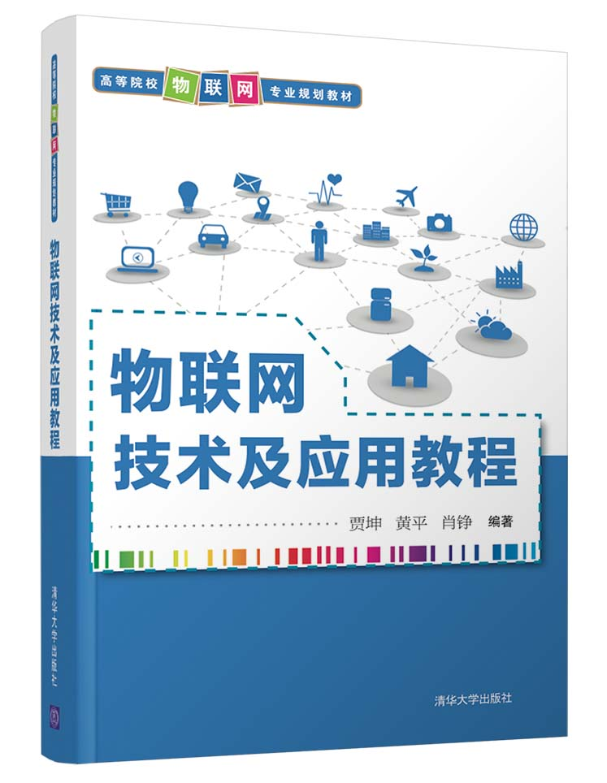

物联网与大数据

介绍
物联网是指通过互联网将各种物理设备、传感器、软件和网络连接起来，实现设备之间的信息交互和智能化管理的网络。物联网可以实现设备之间的互联互通，实时监测和控制，为人们的生活和工作带来便利。大数据是指以庞大的数据量为基础，利用各种数据分析工具和技术来发现隐藏在数据中的模式、关联和趋势的过程。它不仅包括结构化数据（如数据库中的表格数据），还包括非结构化数据（如文本、音频、视频等）。大数据的特点主要包括数据量大、速度快、种类多和价值密度低。